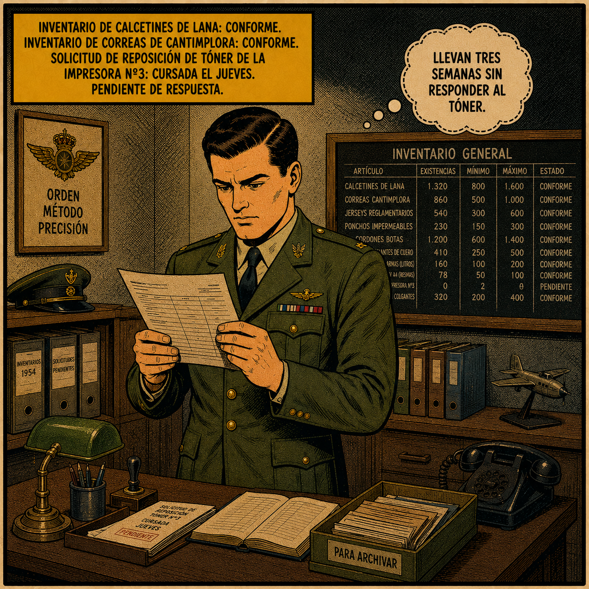
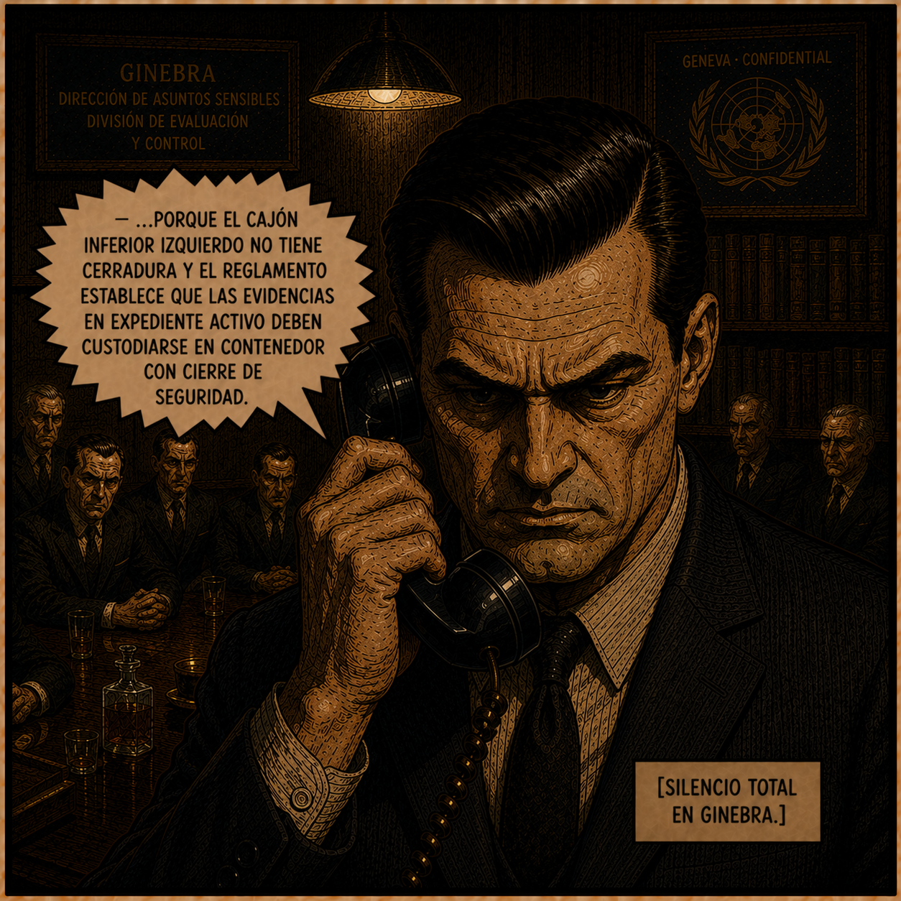

Expedientes Clasificados
Dossiers secretos de los protagonistas de Operacion Chicharron.

CLASIFICADO
Alberto Jimenez
Cabo Primero. Intendente del Ejército del Aire. 28 años.
Alberto es un hombre de una sola velocidad: la correcta. No es torpe, no es ingenuo y no es cobarde. Es, simplemente, un hombre que cree en el procedimiento con la misma fe con que otros creen en Dios. Ante cualquier situación, por absurda o peligrosa que sea, su primera pregunta es siempre la misma: ¿existe un formulario para esto? Nunca ha levantado la voz, nunca ha llegado tarde y nunca ha roto un paquete rasgándolo en lugar de abrirlo con abrecartas. No porque sea una máquina, sino porque le parece lo correcto. Es, sin saberlo, el hombre más peligroso de la historia para cualquier conspiración global, porque las conspiraciones globales no están preparadas para alguien que simplemente sigue el reglamento hasta el final.

URGENTE
Aurelio Prats
Comandante - Superior jerarquico. 54 años.
Tiene la mirada de un hombre que lleva demasiado tiempo guardando secretos que preferiría no guardar. Lleva dos años trabajando para La Corteza sin saber muy bien cómo llegó hasta ahí. Empezó con algo pequeño. Siempre empieza con algo pequeño. En circunstancias normales, firmaba los papeles de Alberto sin leerlos porque Alberto nunca se equivoca. Ahora está atrapado entre las órdenes de La Corteza y el reglamento de Alberto, y el reglamento de Alberto resulta ser un muro más sólido que cualquier cosa que La Corteza haya construido en cuarenta años. Cada vez que intenta parar a Alberto con una orden, Alberto le pide el documento acreditativo correspondiente. Nunca lo tiene. Es, en el fondo, un hombre que tomó una mala decisión hace dos años y está pagándola en formularios.

TOP SECRET
Patricia Solano
Agente del Servicio de Inteligencia Occidental. 32 años.
Agente con once años de carrera que ha desarticulado redes de espionaje en cuatro continentes y ha sobrevivido a situaciones que habrían quebrado a cualquier otro agente. Siempre lleva una carpeta bajo el brazo cuya etiqueta cambia cada vez que la vemos. Es una mujer de recursos infinitos que ha descubierto, con horror, que ninguno de esos recursos sirve de nada cuando la persona a la que intentas ayudar ya tiene un procedimiento para todo. Todavía tiene el Bolígrafo de Visitas Nº3. No se ha acordado de devolverlo.

CLASIFICADO
Helmut Brenz
Científico. 79 años. Antiguo Asesor Técnico de Nutrición del Ejército del Aire (1953).
Antiguo científico alemán y uno de los responsables del Proyecto Grasilla. Lleva cuarenta y dos años en un pueblo de doscientas almas en Navarra criando gallinas y pagando el impuesto de bienes inmuebles con una puntualidad que, sin saberlo, fue lo que permitió que Alberto lo encontrara. Su acento alemán ha sobrevivido a cuatro décadas de navarro: ya no lo delata, pero si uno presta atención está ahí, especialmente cuando está bajo presión o cuando dice algo importante. En esos momentos, el alemán aflora: Ach, Mein Gott, Zweiundvierzig Jahre. Son sus grietas. Guarda desde 1953 una caja de metal verde oliva con el logo del Ejército del Aire. No la ha abierto desde entonces.

REDACTADO
Nº1
Líder de La Corteza. Edad desconocida.
Lleva veinte años sin salir de Ginebra. Habla siempre en voz baja y con pausas calculadas que hacen que cada frase suene como el inicio de algo irreversible. En veinte años al frente de la organización más peligrosa del mundo occidental nunca había necesitado ponerse en pie, nunca había necesitado quitarse la chaqueta y nunca había necesitado hacer nada él mismo. Alberto Jiménez lo ha obligado a hacer las tres cosas.

REDACTADO
La Corteza
Números 2 al 12. Identidades desconocidas.
Doce hombres con traje gris idéntico, número bordado en la solapa, sin nombre ni pasado conocido. Siempre sentados alrededor de la misma mesa oval, siempre en las mismas posiciones, siempre mirando el chicharrón en su cojín de terciopelo negro como si fuera un objeto sagrado, porque para ellos lo es. Como conjunto, son la organización más temida del mundo. Individualmente, son doce hombres que llevan tres números viendo cómo un intendente de 28 años deshace sus planes sin darse cuenta de que los está deshaciendo. El Nº2 es el portavoz y el primero en notar el deterioro colectivo. El Nº3 hace las preguntas que nadie quiere hacer. Los demás, de momento, solo miran.

OBJETO DE INTERÉS
Los Doce Chicharrones
Objeto de interés
Bolsa de plástico que contiene exactamente 12 chicharrones creados durante la Operación Grasilla. No los subestimes, estos chicharrones pueden poner de patas arriba el mundo.